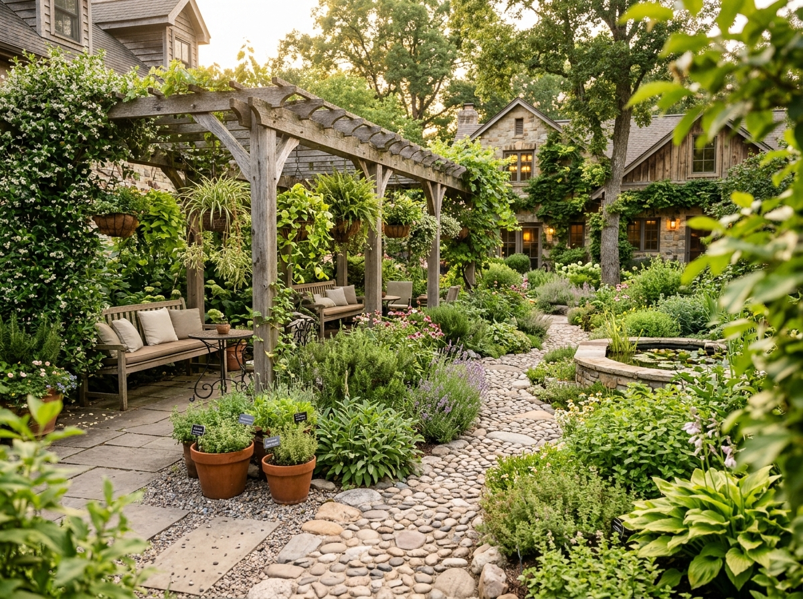
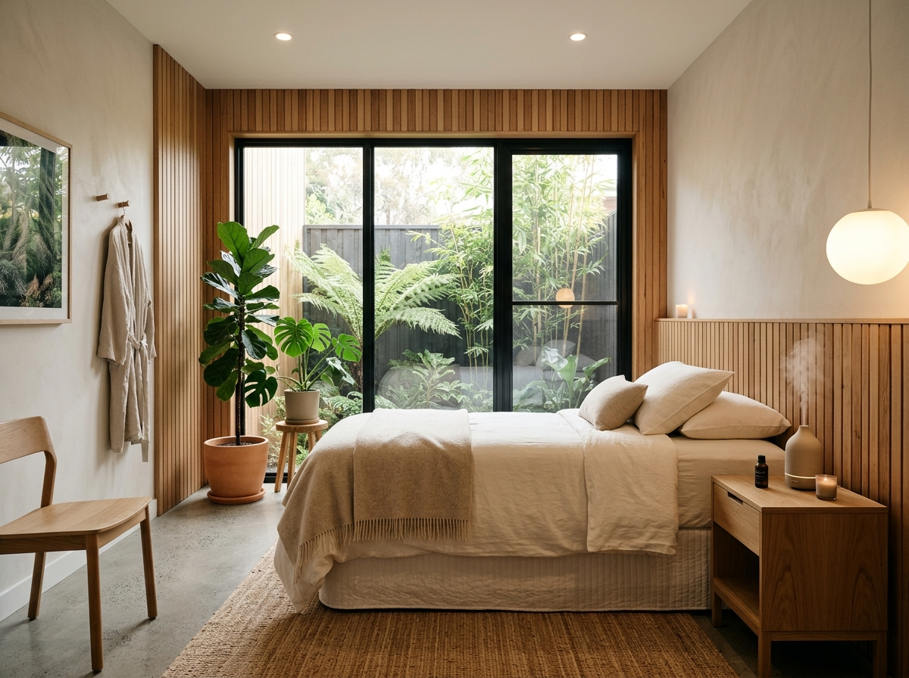
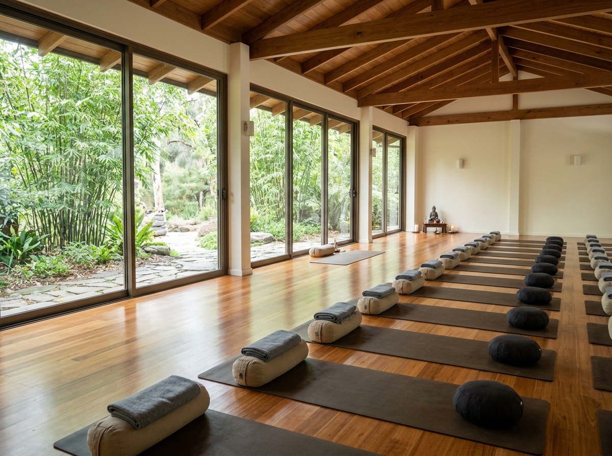

Living Nature
Botanical Healing Garden
An organic courtyard of medicinal herbs, soothing native plants, and shaded reflexology paths designed for mindful outdoor movement between sessions.
Founded on the age-old principles of natural vitality and therapeutic yogic movement, Sattva provides a modern sanctuary dedicated to helping individuals recover biological balance, mental stillness, and lifelong resilience.
At Sattva, we believe that true wellbeing is not an artificial state induced from without, but an innate physiological capability inherent in the human body. When provided with unpolluted air, restorative rest, functional movement, and targeted botanicals, your natural restorative mechanisms awaken.
Our center harmoniously synthesizes the clinical rigor of accredited Naturopathic Medicine with the restorative precision of therapeutic yoga, offering gentle non-invasive therapies customized to your individual lifestyle rhythm.
Every architectural element, light angle, and natural material in our facility has been thoughtfully curated to reduce sensory overload and invite peaceful recovery.

An organic courtyard of medicinal herbs, soothing native plants, and shaded reflexology paths designed for mindful outdoor movement between sessions.

Acoustically insulated private consultation rooms featuring non-toxic natural materials, filtered ventilation, and calming natural illumination.

An expansive practice pavilion engineered with natural sprung timber flooring, ergonomic support props, and open garden views for guided movement.
We operate under transparent, patient-first guidelines that emphasize safety, clinical accountability, and respect for individual wellness objectives.
We employ gentle, natural therapies with minimal intervention, prioritizing comfort and working with the body's natural healing capacity.
We empower patients through transparent lifestyle education, nutritional guidance, and breathing practices for sustainable daily wellness.
Every assessment accounts for physical vitality, mental stress factors, sleep quality, and environmental variables in harmony.
No generic prescriptions. Every session and treatment schedule is tailored to your verified goals, comfort, and physician assessment.
Natural therapies achieve their most profound and lasting results when integrated progressively. Through regular consultations, seasonal adjustments, and patient dashboard tracking, we walk alongside you through each stage of your wellness journey.
Whether you are seeking relief from cumulative postural stress, restoring restful sleep rhythms, or deepening your yogic practice, our experienced team provides consistent support.
Schedule your introductory naturopathy evaluation or personalized yoga session today. Our caring physicians are ready to listen.